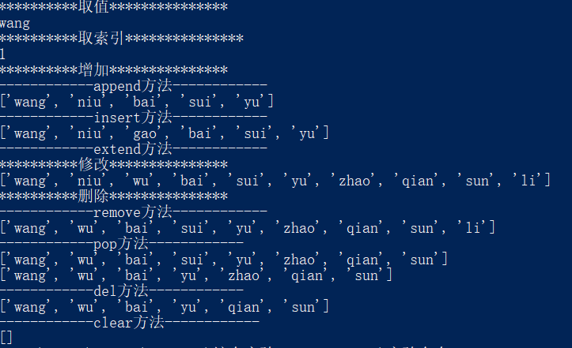

# 列表操作
name_list = ["wang", "niu", "bai", "sui"]
# 取值
print("**********取值***************")
name = name_list[0]
print(name)
# 取索引
print("**********取索引***************")
name_index = name_list.index("niu")
print(name_index)
# 增加
print("**********增加***************")
print("------------append方法------------")
# append方法
name_list.append("yu")
print(name_list)
# insert方法
print("------------insert方法------------")
name_list.insert(2, "gao")
print(name_list)
# extend方法
print("------------extend方法------------")
temp_list = ["zhao", "qian", "sun", "li"]
name_list.extend(temp_list)
# 修改
print("**********修改***************")
name_list[2] = "wu"
print(name_list)
# 删除
print("**********删除***************")
# remove方法
print("------------remove方法------------")
name_list.remove("niu")
print(name_list)
# pop方法
print("------------pop方法------------")
name_list.pop() # 默认最后一个元素
print(name_list)
name_list.pop(3)
print(name_list)
# del方法
print("------------del方法------------")
del name_list[4]
print(name_list)
# clear方法
print("------------clear方法------------")
name_list.clear()
print(name_list)结果：
